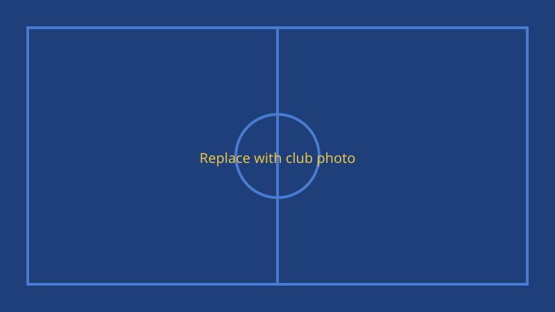

Season 1
Club: Your Club
Write a short summary of the season: the transfers, the tactics, the turning point.

Season statistics
- League finish
- 3rd
- Record
- 21–8–9Won–drawn–lost
- Goals
- 64 for, 41 against
- Longest win streak
- 6 matches
- Best goal
- Player A vs Team B, 78'Scorer, opponent, minute
- Worst goal conceded
- Player C vs Team D, 12'Scorer, opponent, minute
Trophies
No trophies this season.